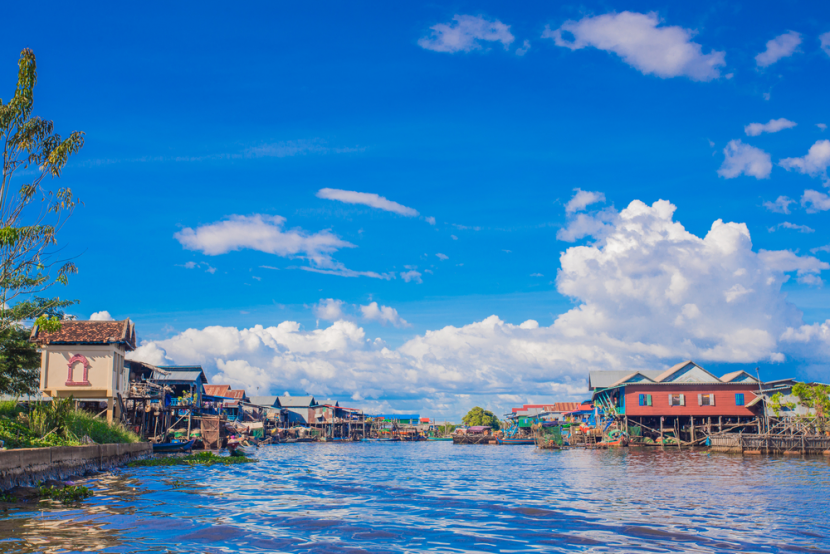

Prey Veng is a small but heavily populated agricultural province located on the southeastern banks of the mighty Mekong. The name of the province literally means ‘tall forest’, but it no longer has those lush forests as most of trees had been chopped down over the years.
Tour wise, there is not much to see. However, during the pre-Angkorian times, this must have been one of the most populated and lively areas of the country. One of the earliest pre-Angkorian kingdoms is located in the area around Ba Phnom.
This is also a good stopover on the way to Kampong Cham or Vietnam. The town itself preserves a few old colonial buildings, evident of it being a lively and important centre in the old days. It has its fair share of temples as well. The Chong Srok temple may be worth a visit. Otherwise, there is the Ba Phnom resort, the Ba Ray An Det resort and Viel Brang to relax at.
Like the province of Svay Rieng, this province is also off the tourist maps, leaving backpackers the ones benefitting from this quaint province.
